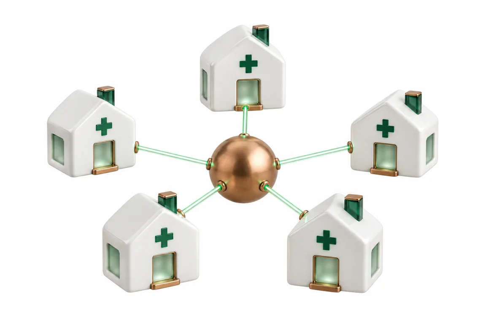

Vision
獣医師は、獣医師の仕事に。
動物看護師は看護に。受付は飼い主さんとの会話に。経営者は病院の運営に。雑務にとらわれず、本業に向き合える病院が、本来あるべき姿だと考えています。

Mission
ミッション
獣医師は獣医師の仕事に、動物看護師は看護に、受付は飼い主さんとの会話に向き合える病院をつくる。
ビジョン
病院どうしが当たり前につながり、人が減っていく時代でも、動物医療に関わる人が疲れずに働き、自分の時間も大切にできる業界にする。
私たちの立ち位置
ラマルクは道具ではなく、スタッフを1人迎えるように病院に加わるパートナーです。
大事にすること
病院が繁盛しても、そこで働く人が疲れ切っていては意味がありません。スタッフも院長も、仕事のあとに自分の時間を持てる病院でありたいと考えています。
Future
ひとつの病院の工夫を、すべての病院の力に
ラマルクを使う医院が増えるほど、できることが広がります。私たちが描いている構想です。
Stage 1
病院と病院
- 紹介状が、検査値と画像ごと相手の先生へ
- かかりつけと夜間救急・二次診療の連携
- 導入していない病院へも、閲覧用のリンクで
Stage 2
飼い主さんの手もと
- ペットの健康手帳をスマホに
- 住所や電話の変更を飼い主さん自身が申請
- ペット保険の請求の手間を減らす
Stage 3
地域と医療
- 匿名の統計で、地域の病気の流行を早く知る
- 経営の指標を、医院を特定せずに比べる
- 大学や学会と進める臨床研究の土台に
ここに書いたのは構想です。飼い主さんの同意と匿名化を前提に、導入いただいた医院さまの声を聞きながら順番と時期を決めます。
Message
代表のことば
いろいろなシステムを組み合わせて使うのが、当たり前だと思っていました。でも自分たちで1つにつなげてみると、仕事が連動して、驚くほど楽になった。それは作って初めて気づいたことです。
獣医師なのに、経営者として集客も、人のことも、お金のことも背負わなければならない。その負担を減らしたくて、この仕事を始めました。自分の病院で使いながら、仕事が1つずつ楽になっていくのを、何度も実感してきました。その手応えを、同じ悩みを持つ先生にもお届けしたいと思っています。
代表取締役 町田 健吾 荻窪ツイン動物病院 院長・獣医師
Request
まずは資料を、
LINE で受け取ってください。
病院名・院長名・（開業前の方は）開業予定の時期をお送りください。確認のうえ、詳しい資料と画面の動画をお届けします。
LINE で資料を受け取る資料請求の流れを見る
LINE ID：@310unbcy ／ LINE を使わない方は info@lamarck.co.jp へ